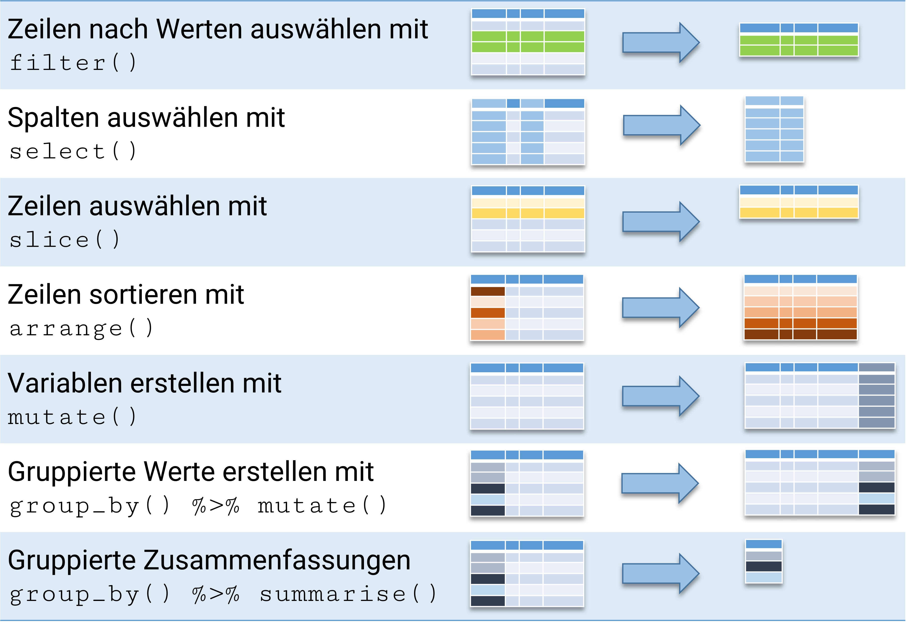
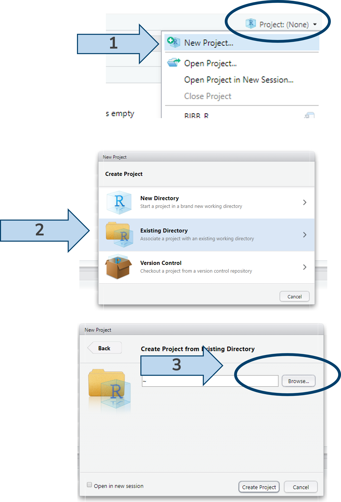
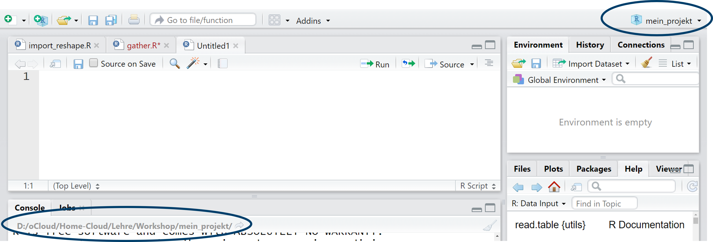
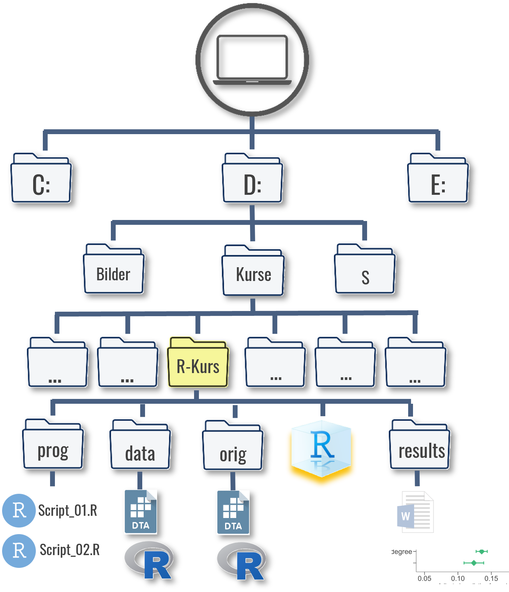

funktion(objektname1,
option1 = sehr_lange_Auswahl_die_sehr_lang_ist,
option2 = noch_eine_Auswahl_Option2)2 Arbeiten mit Datensätzen
(Spätes) Vorwort zu R und der Befehlsstruktur
- Alles ist ein Objekt.
- Alles hat einen Namen.
- Alles was wir tun basiert auf Funktionen.
- Funktionen kommen aus “packages”1, aber wir werden auch eigene Funktionen schreiben.
Punkt 1. und 2. wird als Objektorientierte Programmierung (object-orientated programming, OOP) bezeichnet. Wir werden in diesem Kurs also objektorientierte Programmierung lernen.
Klingt gut, oder?
- Funktionen sind (fast) immer Verben gefolgt von einer Klammer, bspw.
colnames(), in welcher das zu bearbeitende Objekt angegeben wird. Das kann bspw. eine Variable oder ein Datensatz sein - Außerdem werden in den Klammern auch ggf. Optionen angegeben - bspw. sehen wir unten den Einlesebefehl für
.dta-Dateien:read_dta(datensatz.dta, n_max = 100) - Zeilenumbrüche werden von R ignoriert, d.h. wir können einen Befehl über mehre Zeilen schreiben - bspw. um es etwas übersichtlicher zu halten:
- Wenn wir eine Funktion durchführen mit
funktion(objektname, option1 = TRUE, option2 = FALSE)bekommen wir das Ergebnis in der Konsole ausgegeben. - Soll das Ergebnis einer Berechnung oder Operation nicht nur angezeigt werden, sondern für weitere Schritte behalten werden, muss mit
name <- ...das Ergebnis unternameabgelegt werden. Das Ausgangsobjekt bleibt unverändert - außer wir überschreiben das Ausgangsobjekt explizitname <- funktion(name). Hier im Skript werde ich sehr häufig den Schritt des Ablegens weglassen, weil wir ja direkt sehen wollen, was passiert. Wenn wir aber mit bisherigen Operationen weiterarbeiten wollen, dann müssen wir sie in R unter einem Objektnamen ablegen. - Optionen innerhalb einer
()können auch einfach auf Basis der Reihenfolge angegeben werden - Mit
?funktion()ist die Hilfe aufrufbar, bspw.?colnames()
Ein paar allgemeine Aspekte, in denen sich das Arbeiten mit R von dem mit einigen anderen Programmen unterscheidet:
R stoppt nicht notwendigerweise bei einem Syntaxfehler, sondern versucht den Rest der Befehle auszuführen. Aber: RStudio stoppt ab Version 2022.07 bei einem Syntaxfehler.Für alle Stata-Nutzenden: kein
variable xyz already definedmehr. Wir können alles überschreiben, ohne, replaceoder ähnliches.Durch die Objektorientierung haben wir die Möglichkeit mehrere Datensätze gleichzeitig geöffnet zu haben - das erhöht die Flexibilität.
In der ersten Session haben wir einige Schritte mit der Taschenrechnerfunktion in R unternommen. Die wirkliche Stärke von R ist aber die Verarbeitung von Daten - los geht’s.
2.1 Datenstrukturen in R: data.frame
Im vorherigen Kapitel haben wir die Studierendenzahlen der Uni Bremen (19173), Uni Vechta (5333) und Uni Oldenburg (15643) zusammen unter studs abgelegt und mit den in profs abgelegten Professurenzahlen ins Verhältnis gesetzt. Das funktioniert soweit gut, allerdings ist es übersichtlicher, zusammengehörige Werte auch zusammen ablegen. Dafür gibt es in R data.frame. Wir können dazu die beiden Objekte in einem Datensatz ablegen, indem wir sie in data.frame eintragen und das neue Objekt unter dat1 ablegen. Wenn wir dat1 aufrufen sehen wir, dass die Werte zeilenweise zusammengefügt wurden:
studs <- c(19173,5333,15643) # Studierendenzahlen unter "studs" ablegen
profs <- c(322,67,210) # Prof-Zahlen unter "profs" ablegen
dat1_orig <- data.frame(studs, profs)
dat1_orig studs profs
1 19173 322
2 5333 67
3 15643 210dat1 <- data.frame(studs = c(19173,5333,15643),
profs = c(322,67,210),
gegr = c(1971,1830,1973)) # ohne zwischen-Objekte
dat1 # zeigt den kompletten Datensatz an studs profs gegr
1 19173 322 1971
2 5333 67 1830
3 15643 210 1973In der ersten Zeile stehen also die Werte der Uni Bremen, in der zweiten Zeile die Werte der Uni Vechta usw. Die Werte können wir dann mit datensatzname$variablenname aufrufen. So können wir die Spalte profs anzeigen lassen:
dat1$profs [1] 322 67 210Mit colnames()/names() können wir die Variablen-/Spaltennamen des Datensatzes anzeigen lassen, zudem können wir mit nrow und ncol die Zahl der Zeilen bzw. Spalten aufrufen:
colnames(dat1) ## Variablen-/Spaltennamen anzeigen[1] "studs" "profs" "gegr" names(dat1) ## Variablen-/Spaltennamen anzeigen[1] "studs" "profs" "gegr" ncol(dat1) ## Anzahl der Spalten/Variablen[1] 3nrow(dat1) ## Anzahl der Zeilen/Fälle[1] 3Neue zusätzliche Variablen können durch datensatzname$neuevariable in den Datensatz eingefügt werden:
dat1$stu_prof <- dat1$studs/dat1$profs
## dat1 hat also nun eine Spalte mehr:
ncol(dat1) [1] 4dat1 studs profs gegr stu_prof
1 19173 322 1971 59.54348
2 5333 67 1830 79.59701
3 15643 210 1973 74.49048Wir können auch ein oder mehrere Wörter in einer Variable ablegen, jedoch müssen Buchstaben/Wörter immer in "" gesetzt werden.
dat1$uni <- c("Uni Bremen","Uni Vechta", "Uni Oldenburg")
dat1 studs profs gegr stu_prof uni
1 19173 322 1971 59.54348 Uni Bremen
2 5333 67 1830 79.59701 Uni Vechta
3 15643 210 1973 74.49048 Uni OldenburgMit View(dat1) öffnet sich zudem ein neues Fenster, in dem wir den gesamten Datensatz ansehen können:
View(dat1)
2.2 Datentypen in R
Damit haben wir bisher zwei Variablentypen kennen gelernt: numeric (enthält Zahlen) und character (enthält Text oder Zahlen, die als Text verstanden werden sollen). Zudem haben wir eine Organisationsmöglichkeit kennengelernt: data.frame.
Für uns sind es folgende Variablentypen in R wichtig:2
| Vektoren | |
|---|---|
integer |
Numerische Werte ( |
character |
Text (oder als Text verstandende Zahlen) |
factor |
Text oder als Text verstandende Zahlen mit vorgegebener Sortierung und fixem Werteuniversum |
logical |
|
| Zusammengefasste Vektoren | |
|---|---|
data.frame |
Zweidimensionale Datenstruktur, die in Tabellenform organisiert ist - tibble sind eine Weiterentwicklung des data.frame im tidyverse (mehr dazu gleich) |
list |
Geordnete Sammlung von Vektoren unterschiedlicher Typen - kann andere Wertetypen, |
Vorerst fokussieren wir uns auf character und numerische Variablen. Die weiteren Typen, besprechen wir wenn sie nötig sind. Mit class() kann die Art der Variable untersucht werden oder mit is.numeric() bzw. is.character() können wir abfragen ob eine Variable diesem Typ entspricht:
class(dat1$profs)[1] "numeric"class(dat1$uni)[1] "character"is.numeric(dat1$profs)[1] TRUEis.character(dat1$profs)[1] FALSEMit as.character() bzw. as.numeric() können wir einen Typenwechsel erzwingen:
as.character(dat1$profs) ## die "" zeigen an, dass die Variable als character definiert ist[1] "322" "67" "210"Das ändert erstmal nichts an der Ausgangsvariable dat1$profs:
class(dat1$profs)[1] "numeric"Wenn wir diese Umwandlung für dat1$profs behalten wollen, dann müssen wir die Variable überschreiben:
dat1$profs <- as.character(dat1$profs)
dat1$profs [1] "322" "67" "210"class(dat1$profs)[1] "character"Mit character-Variablen kann nicht gerechnet werden, auch wenn sie Zahlen enthalten:
dat1$profs / 2 Error in dat1$profs/2: nicht-numerisches Argument für binären OperatorWir können aber natürlich dat1$profs spontan mit as.numeric umwandeln, um mit den Zahlenwerten zu rechnen:
as.numeric(dat1$profs)[1] 322 67 210as.numeric(dat1$profs) / 2[1] 161.0 33.5 105.0Wenn wir Textvariablen in numerische Variablen umwandeln, bekommen wir NAs ausgegeben. NA steht in R für fehlende Werte:
as.numeric(dat1$uni)Warning: NAs durch Umwandlung erzeugt[1] NA NA NAR weiß (verständlicherweise) also nicht, wie die Uni-Namen in Zahlen umgewandelt werden sollen.
Nicht selten ist ein Problem bei einer Berechnung auf den falschen Variablentypen zurückzuführen.
2.3 Zeilen & Spalten auswählen
Eine typische Aufgabe in der Arbeit mit Datensätzen ist die Auswahl von Zeilen (“Fällen”) und Spalten (“Variablen”).
Dazu stellt uns R in der Basisversion3 eine Auswahlmöglichkeit zur Verfügung, welche [ ] verwendet. Die grundlegende Struktur ist dabei [Zeilenauswahl, Spaltenauswahl]. Lassen wir den Part vor oder nach dem Komma leer, werden alle Zeilen/Spalten ausgewählt. Achtung: das vergessene Komma ist wohl einer der Fehlerquellen in R.
dat1 # vollständiger Datensatz
dat1[1,1] # erste Zeile, erste Spalte
dat1[1,] # erste Zeile, alle Spalten
dat1[,1] # alle Zeilen, erste Spalte (entspricht hier dat1$studs)
dat1[,"studs"] # alle Zeilen, Spalte mit Namen studs -> achtung: ""In diese eckigen Klammern können wir auch Bedingungen schreiben, um so Auswahlen aus dat1 zu treffen.
dat1[dat1$studs > 10000, ] # Zeilen in denen studs größer 10000, alle Spalten studs profs gegr stu_prof uni
1 19173 322 1971 59.54348 Uni Bremen
3 15643 210 1973 74.49048 Uni Oldenburgdat1[dat1$studs > 10000 & dat1$profs < 300, ] # & bedeutet UND studs profs gegr stu_prof uni
3 15643 210 1973 74.49048 Uni Oldenburgdat1$profs[dat1$studs > 10000] # Nur Prof-Zahl nachsehen: kein Komma [1] "322" "210"2.3.1 Übung
Die Wiederholung des Datensatznamens in den [ ] macht die Syntax aber recht lang und etwas schreibintensiv. Daher gibt es eine bessere/bequemere Lösung. Dazu verwenden wir das Paket {dplyr}4.
2.4 Pakete in R
Pakete sind Erweiterungen für R, die zusätzliche Funktionen beinhalten. Pakete müssen einmalig installiert werden und dann vor der Verwendung in einer neuen Session (also nach jedem Neustart von R/RStudio) geladen werden. install.packages() leistet die Installation, mit library() werden die Pakete geladen:
install.packages("Paket") # auf eurem PC nur einmal nötig
library(Paket) # nach jedem Neustart nötigHäufig werden bei install.packages() nicht nur das angegebene Paket, sondern auch eine Reihe weiterer Pakete heruntergeladen, die sog. “dependencies”. Das sind Pakete, welche im Hintergrund verwendet werden, um die Funktionen des eigentlich gewünschten Pakets zu ermöglichen. Also nicht erschrecken, wenn die Installation etwas umfangreicher ausfällt.
Mit install.packages() schrauben wir sozusagen die Glühbirne in R, mit library() betätigen wir den Lichtschalter, sodass wir die Befehle aus dem Paket auch verwenden können. Mit jedem Neustart geht die Glühbirne wieder aus und wir müssen sie mit library() wieder aktivieren. Das hat aber den Vorteil, dass wir nicht alle Glühbirnen auf einmal anknipsen müssen, wenn wir R starten.
install.packages() im IAB-Netzwerk
Aufgrund der VPN-Einstellungen im IAB muss in R folgende Option gesetzt werden, damit Downloads möglich sind:
options(download.file.method = "wininet")
Dazu bieten sich zwei Möglichkeiten:
- nach jedem Neustart von RStudio vor
install.packages()mit setzen:
options(download.file.method = "wininet")
install.packages()- diese Option permanent “verankern”: wer den Befehl nicht zu Beginn jeden R-Scripts aufführen möchte, kann ihn in die
Rprofile-Datei (Rprofile.site) mit globalen Einstellungen aufnehmen. Diese Datei liegt beim BIBB Arbeitsgerät unter folgendem Pfad:C:\RforWindows_4_2_1\etcMehr zu RProfile
Pakete einmalig laden
Neben library() gibt es auch die Möglichkeit, Funktionen aus Paketen mit :: aufzurufen:
paket::function()Diese Option wird häufig verwendet, wenn lediglich eine Funktion aus einem Paket einmalig verwendet wird und oder um deutlich zu machen, aus welchem Paket die verwendete Funktion kommt. Das kann auch bei Problemen mit einem Befehl hilfreich sein: evtl. wurde ein weiteres Paket mit einem gleichnamigen Befehl geladen - dann wird der erste Befehl überschrieben (meist mit einer Warnung), die bespielweise so aussehen kann:
Die folgenden Objekte sind maskiert von ‘package:dplyr’:
between, first, last
Das folgende Objekt ist maskiert ‘package:purrr’:
transposeDas kann umgangen werden, wenn gewisse Pakte gar nicht vollständig geladen, sondern lediglich die nötigen Funktionen mit :: aufgerufen werden.
Allgemeine Lösung für
install.packages() wenn keine Internetverbindung besteht
Unter R Packages können die benötigten Pakete heruntergeladen werden. Nachdem wir das Paket als .zip-Datei gespeichert haben, wir mit folgendem Befehl das Paket in der R-Umgebung installieren:
# Installation von Paket "XML"
install.packages("E:/XML_3.98-1.3.zip", repos = NULL, type = "source")2.5 {tidyverse}
Wir werden in diesem Kurs vor allem mit Paketen aus dem {tidyverse} arbeiten. tidyverse ist eine Sammlung an Paketen, die übergreifende Syntaxlogik haben und so besonders gut miteinander harmonisieren und eine riesige Bandbreite an Anwendungsfällen abdecken. Mit
install.packages("tidyverse")werden folgende Pakete installiert:
broom, conflicted, cli, dbplyr, dplyr, dtplyr, forcats, ggplot2, googledrive, googlesheets4, haven, hms, httr, jsonlite, lubridate, magrittr, modelr, pillar, purrr, ragg, readr, readxl, reprex, rlang, rstudioapi, rvest, stringr, tibble, tidyr, xml2, tidyverse
Wir werden einige im Laufe des Kurses kennen lernen. Das zunächst wichtigste ist {dplyr}, welches unter anderem die Auswahl von Fällen und Variablen erleichtert:

{dplyr} Cheatsheetinstall.packages("tidyverse")
# installiert die komplette Paketsammlung des tidyverseEine Installation ist aber nur der erste Schritt, jetzt müssen wir mit library() noch das Paket laden:
library(tidyverse) # nach einmaligem install.packages("tidyverse")2.6 Zeilen auswählen mit slice()
Eine erste Funktion aus dem {tidyverse} ist slice(), mit welcher wir Zeilen auswählen können:
slice(dat1,1) # erste Zeile
slice(dat1,2:3) # Zeile 2-3
slice(dat1,c(1,3)) # Zeile 1 und 32.7 Beobachtungen auswählen mit filter()
Mit filter() können wir Zeilen aus dat1 mit Hilfe von Bedingungen auswählen:
filter(dat1,uni == "Uni Oldenburg", studs > 1000) studs profs gegr stu_prof uni
1 15643 210 1973 74.49048 Uni OldenburgDie Auswahl ändert das Ausgangsobjekt dat1 aber nicht:
dat1 studs profs gegr stu_prof uni
1 19173 322 1971 59.54348 Uni Bremen
2 5333 67 1830 79.59701 Uni Vechta
3 15643 210 1973 74.49048 Uni OldenburgMöchten wir das Ergebnis unserer Auswahl mit filter() für weitere Schritte behalten, können wir unser Ergebnis in einem neuen data.frame-Objekt ablegen:
ueber_10tsd <- filter(dat1, studs > 10000)
ueber_10tsd studs profs gegr stu_prof uni
1 19173 322 1971 59.54348 Uni Bremen
2 15643 210 1973 74.49048 Uni Oldenburg2.7.1 Auswahloperatoren
R und {dplyr} stellen uns einige weitere Operatoren zur Auswahl von Zeilen zu Verfügung:
<=und>=|oder%in%“eines von”between()ist eine Hilfsfunktion aus{dplyr}für Wertebereiche
filter(dat1, studs >= 10000)
filter(dat1, studs <= 10000)
filter(dat1,studs > 10000 | profs < 200) # mehr als 10.000 Studierende *oder* weniger als 200 Professuren
filter(dat1, gegr %in% c(1971,1830)) # gegründet 1971 oder 1830
filter(dat1, between(gegr,1971,1830)) # gegründet zwischen 1971 und 1830 (einschließlich)2.8 Variablen auswählen mit select()
Mit select() enthält {dplyr} auch einen Befehl zu Auswahl von Spalten/Variablen:
dat1 studs profs gegr stu_prof uni
1 19173 322 1971 59.54348 Uni Bremen
2 5333 67 1830 79.59701 Uni Vechta
3 15643 210 1973 74.49048 Uni Oldenburgselect(dat1, studs,profs) studs profs
1 19173 322
2 5333 67
3 15643 210Wir können auch hier einige Operatoren verwenden: : um einen Bereich auszuwählen oder ! als “nicht”-Operator:
select(dat1, 1:3) # Spalte 1-3 studs profs gegr
1 19173 322 1971
2 5333 67 1830
3 15643 210 1973select(dat1, !profs) # alles außer profs studs gegr stu_prof uni
1 19173 1971 59.54348 Uni Bremen
2 5333 1830 79.59701 Uni Vechta
3 15643 1973 74.49048 Uni OldenburgAuch hier gilt: wenn wir die Veränderungen auch weiter verwenden wollen, müssen wir sie in einem neuen Objekt ablegen:
dat_ohne_profs <- select(dat1, !profs)
dat_ohne_profs studs gegr stu_prof uni
1 19173 1971 59.54348 Uni Bremen
2 5333 1830 79.59701 Uni Vechta
3 15643 1973 74.49048 Uni Oldenburgdat1 # unverändert studs profs gegr stu_prof uni
1 19173 322 1971 59.54348 Uni Bremen
2 5333 67 1830 79.59701 Uni Vechta
3 15643 210 1973 74.49048 Uni Oldenburg2.8.1 Hilfsfunktionen
select() hat außerdem einige Hilfsfunktionen, welche die Variablenauswahl auf Basis der Variablennamen einfacher machen.
contains("b"): Variablenname enthält..., bspw.select(dat1,contains("b"))matches(): Variablenauswahl mit einer regular expression, bspw.select(dat1,matches("b$")): alle Variablen mitbam Ende des Namens.
Es gibt noch einige weitere Hilfsfunktionen, für eine vollständige Auflistung ?select_helpers.
2.8.2 Übung
2.9 Arbeiten mit der Pipe: filter() und select() kombinieren
Wenn wir jetzt aber einige Zeilen und einige Spalten auswählen möchten, dann können wir filter() und select() kombinieren:
select(filter(dat1,studs < 10000),uni) uni
1 Uni VechtaDiese Befehlsschachtel können wir mit der sog. Pipe %>% auflösen. %>% steht einfach für “und dann”. Die Pipe kommt aus dem Paket {magrittr}, welches wiederum Teil des tidyverse ist und automatisch mit {dplyr} geladen wird.
filter(dat1,studs < 10000) %>% select(uni) uni
1 Uni VechtaHäufig wird die Pipe dann so verwendet, dass zu Beginn lediglich der zu bearbeitende Datensatz steht und sich dann die Schritte anschließen:
dat1 %>% filter(.,studs < 10000) %>% select(.,uni) uni
1 Uni VechtaDer Punkt . steht jeweils für das Ergebnis des vorherigen Schritts. Hier also:
- Rufe
dat1auf und dann (%>%) - Wähle nur Zeilen aus in denen
studs< 10000 und dann (%>%) - Behalte nur die Spalte
uni
Dan Punkt können wir auch weglassen:
dat1 %>% filter(studs < 10000) %>% select(uni) uni
1 Uni Vechta%>% kann mit STRG+SHIFT+m (cmd+shift+m für Mac) eingefügt werden.
2.10 Variablentyp factor - eigene Reihenfolgen festlegen
Ein weitere häufige Aufgabe in der Datenanalyse ist das Sortieren von Datensätzen. Dazu haben wir arrange() zur Verfügung:
dat1 %>% arrange(studs) studs profs gegr stu_prof uni
1 5333 67 1830 79.59701 Uni Vechta
2 15643 210 1973 74.49048 Uni Oldenburg
3 19173 322 1971 59.54348 Uni BremenDas funktioniert auch für string-Variablen:
dat1 %>% arrange(uni) studs profs gegr stu_prof uni
1 19173 322 1971 59.54348 Uni Bremen
2 15643 210 1973 74.49048 Uni Oldenburg
3 5333 67 1830 79.59701 Uni VechtaWas aber, wenn wir eine fixe Ordnung vergeben möchten, die nicht der numerischen oder alphabetischen Ordnung entspricht? Hier bspw. wenn wir die Unis in folgende Ordnung bringen möchten: 1) Uni Oldenburg, 2) Uni Bremen und 3) Uni Vechta. Dabei hilft uns ein dritter Variablentyp: factor.
Mit dem Argument levels = können wir eine Reihenfolge festlegen:
factor(dat1$uni, levels = c("Uni Oldenburg", "Uni Bremen", "Uni Vechta"))[1] Uni Bremen Uni Vechta Uni Oldenburg
Levels: Uni Oldenburg Uni Bremen Uni Vechtadat1$uni_fct <- factor(dat1$uni,
levels = c("Uni Oldenburg", "Uni Bremen", "Uni Vechta"))Wenn wir nun nach uni_fct sortieren, dann wird die Reihenfolge der levels berücksichtigt:
class(dat1$uni_fct)[1] "factor"dat1 %>% arrange(uni_fct) studs profs gegr stu_prof uni uni_fct
1 15643 210 1973 74.49048 Uni Oldenburg Uni Oldenburg
2 19173 322 1971 59.54348 Uni Bremen Uni Bremen
3 5333 67 1830 79.59701 Uni Vechta Uni VechtaMit desc() können wir in umgekehrter Reihenfolge sortieren:
dat1 %>% arrange(desc(uni_fct)) studs profs gegr stu_prof uni uni_fct
1 5333 67 1830 79.59701 Uni Vechta Uni Vechta
2 19173 322 1971 59.54348 Uni Bremen Uni Bremen
3 15643 210 1973 74.49048 Uni Oldenburg Uni OldenburgDas mag für den Moment relativ trivial erscheinen, ist aber später sehr praktisch um in Grafiken Variablen in eine gewisse Ordnung zu bringen oder in Regressionsmodellen die Referenzkategorie festzulegen.
Natürlich können wir auch nach mehreren Variablen sortieren, dazu fügen wir einfach weitere in arrange() ein:
dat1 %>% arrange(desc(uni_fct), gegr, studs) studs profs gegr stu_prof uni uni_fct
1 5333 67 1830 79.59701 Uni Vechta Uni Vechta
2 19173 322 1971 59.54348 Uni Bremen Uni Bremen
3 15643 210 1973 74.49048 Uni Oldenburg Uni Oldenburg(Macht in diesem Beispiel aber wenig Sinn)
2.10.1 Übung
2.11 Projekt einrichten
Grundsätzlich lohnt es sich, in RStudio Projekte einzurichten. Projekte sind .Rproj-Dateien , die automatisch Arbeitsverzeichnis auf den Ort setzen, an dem sie gespeichert sind. Das erleichtert das kollaborative Arbeiten: egal wer und auf welchem Gerät gerade an einem Projekt arbeitet - durch die Projektdatei sind alle Pfade immer relativ zum Projektverzeichnis. Im weiteren können auch Versionkontrolle via git, bspw. github und weitere Funktionen in der Projektdatei hinterlegt werden und so für alle Nutzenden gleich gesetzt werden. Außerdem bleiben die zuletzt geöffneten Scripte geöffnet, was ein Arbeiten an mehreren Projekten erleichtert.

Mit getwd() lässt sich überprüfen, ob das funktioniert hat:
getwd()[1] "D:/Kurse/R-Kurs"
Alternativ könnten wir auch mit folgendem Befehl ein .Rproj - Projekt erstellen (hier ein Beispiel für den Aufruf eines Pakets mit ::):
rstudioapi::initializeProject(path = "D:/Kurse/R-Kurs")So können wir das Projekt dann öffnen:
rstudioapi::openProject(path = "D:/Kurse/R-Kurs")2.12 Datensätze einlesen
In der Regel werden wir aber Datensätze verwenden, deren Werte bereits in einer Datei gespeichert sind und die wir lediglich einlesen müssen. Dafür gibt es unzählige Möglichkeiten.
In diesem Seminar werden wir mit dem Campus-File des PASS arbeiten, dessen Teile als Stata-Dateien vorliegen.
Um den Datensatz nun in R zu importieren, müssen wir R mitteilen unter welchem Dateipfad der Datensatz zu finden ist. Der Dateipfad ergibt sich aus der Ordnerstruktur Ihres Gerätes, so würde der Dateipfad im hier dargestellten Fall “D:/Kurse/R-Kurs/” lauten:
Natürlich hängt der Dateipfad aber ganz davon ab, wo Sie den Datensatz gespeichert haben:

Diesen Dateipfad müssen wir also R mitteilen.
2.12.1 Der Einlesebefehl
Jetzt können wir den eigentlichen Einlesebefehl read.table verwenden. Für den Pfad können wir nach file = lediglich die Anführungszeichen angeben und innerhalb dieser die Tab-Taste drücken. Dann bekommen wir alle Unterverzeichnisse und Tabellen im Projektordner angezeigt.5
library(haven)
pend <- read_dta("./orig/PENDDAT_cf_W13.dta") Der Einlesevorgang besteht aus zwei Teilen: zuerst geben wir mit pend den Objektnamen an, unter dem R den Datensatz ablegt. Nach dem <- steht dann der eigentliche Befehl read_dta(), der wiederum mehrere Optionen enthält. Als erstes geben wir den genauen Datensatznamen an - inklusive der Dateiendung.
R hat Probleme mit Windows-typischen
\ in Datenpfaden
Leider nutzen Windows-Systeme \ in den Dateipfaden - das führt in R zu Problemen. Daher müssen Dateipfade immer mit / oder alternativ mit \\ angegeben werden. RStudio kann zumindest mit der STRG + F/der Suchen & Ersetzen Funktion etwas unterstützen.
Das so erstellte Objekt ist ein data.frame:
class(pend)[1] "tbl_df" "tbl" "data.frame"Genau genommen handelt es sich um ein tibble - das ist eine Weiterentwicklung von data.frames im tidyverse, welcher u.a. Labels enthält und außerdem in der Darstellung einige zusätzliche Informationen enthält - in der ersten Zeile stehen bspw. die Variablenklassen.
Würden hier jetzt einfach pend eintippen bekämen wir den kompletten Datensatz angezeigt. Für einen Überblick können wir head verwenden:
head(pend)# A tibble: 6 × 123
pnr hnr welle pintj…¹ pintmon pintmod zpsex palter PD0400 PA0100
<dbl> <dbl> <dbl+l> <dbl+l> <dbl+l> <dbl+lb> <dbl+l> <dbl+> <dbl+lbl> <dbl+>
1 1.00e9 1.00e7 1 [Wel… 2007 5 [Mai] 1 [CAP… 2 [Wei… 36 2 [Ehe… 8
2 1.00e9 1.00e7 1 [Wel… 2007 5 [Mai] NA 1 [Mae… 39 2 [Ehe… 8
3 1.00e9 1.00e7 3 [Wel… 2009 3 [Mae… 1 [CAP… 2 [Wei… 38 -9 [Ite… 9
4 1.00e9 1.00e7 1 [Wel… 2007 4 [Apr… 1 [CAP… 1 [Mae… 66 -10 [Ite… 8
5 1.00e9 1.00e7 1 [Wel… 2007 4 [Apr… 1 [CAP… 2 [Wei… 61 3 [Ehe… 2
6 1.00e9 1.00e7 2 [Wel… 2008 5 [Mai] 1 [CAP… 2 [Wei… 62 3 [Ehe… 2
# … with 113 more variables: PA0200 <dbl+lbl>, PA0300 <dbl+lbl>,
# PA0445 <dbl+lbl>, PA0800 <dbl+lbl>, PA0900 <dbl+lbl>, PA1000 <dbl+lbl>,
# PSM0100 <dbl+lbl>, PEO0100a <dbl+lbl>, PEO0100b <dbl+lbl>,
# PEO0100c <dbl+lbl>, PEO0100d <dbl+lbl>, PEO0100e <dbl+lbl>,
# PEO0200a <dbl+lbl>, PEO0200b <dbl+lbl>, PEO0200c <dbl+lbl>,
# PEO0200d <dbl+lbl>, PEO0300a <dbl+lbl>, PEO0300b <dbl+lbl>,
# PEO0300c <dbl+lbl>, PEO0300d <dbl+lbl>, PEO0300e <dbl+lbl>, …Mit nrow und ncol können wir kontrollieren, ob das geklappt hat. Der Datensatz sollte 28424 Zeilen und 123 Spalten haben:
nrow(pend)[1] 28424ncol(pend)[1] 123Natürlich können wir wie oben auch aus diesem, viel größeren, Datensatz Zeilen und Spalten auswählen. Zum Beispiel können wir die Daten aus dem Jahr 2006 auswählen und diese unter pend06 ablegen:
pend06 <- pend %>% filter(pintjahr == 2006)Außerdem hat pend06 natürlich deutlich weniger Zeilen als pend:
nrow(pend06)[1] 168Möchten wir die genauen Altersangaben der Befragten aus pend06 sehen, können wir die entsprechende Spalte mit pend06$palter aufrufen:
pend06$palter<labelled<double>[168]>: Alter (Welle 1: gen. aus P1; ab Welle 2: beste Inf.), generiert
[1] 71 66 64 64 63 51 64 65 26 38 41 63 58 58 69 45 59 37 28 63 56 29 29 49 47
[26] 66 34 22 21 37 36 58 56 80 44 65 61 66 40 53 34 70 69 54 65 62 58 54 51 57
[51] 72 52 25 34 55 44 68 73 46 87 74 83 46 40 62 58 66 41 53 71 66 79 54 42 68
[76] 68 81 92 70 66 68 77 44 66 66 67 62 43 35 35 52 54 20 48 48 20 41 24 22 33
[101] 55 41 50 36 19 52 25 36 37 29 37 36 43 49 16 59 28 19 43 44 30 43 50 50 53
[126] 52 71 43 58 58 58 38 49 30 27 50 58 26 36 44 28 19 42 44 23 20 33 24 31 32
[151] 31 44 50 58 45 57 37 62 46 52 50 47 40 62 40 19 28 35
Labels:
value label
-10 Item in Fragebogenversion nicht erhoben
-9 Item in Welle nicht erhoben
-8 Unplausibler Wert
-4 Frage irrtuemlich nicht gestellt
-3 Trifft nicht zu (Filter)
-2 Keine Angabe
-1 Weiss nichtWie wir beim Überblick gesehen haben, gibt es aber noch deutlich mehr Variablen im PASS als palter und nicht alle haben so aussagekräftige Namen - z.B. PD0400. Um diese Variablennamen und auch die Bedeutung der Ausprägungen zu verstehen brauchen wir das Codebuch. Außerdem können wir auf die attributes() einer Variable zurückgreifen - mehr zu labels später.
2.12.2 Übung
2.13 Objekte exportieren
Der Begriff speichern kann in R bisweilen zu Missverständnissen führen: Ist gemeint, einen Datensatz o.ä. (1) auf der Festplatte als .csv, .dta, .sav für andere Programme zugänglich abzulegen oder (2) lediglich die Ergebnisse intern in R unter einem Objektnamen abzulegen? Ich vermeide daher das Wort speichern und spreche entweder von exportieren (Fall 1: in eine Datei schreiben) oder ablegen (Fall 2: Ergebnisse/Werte innerhalb von R in einem Objekt ablegen)
Wir können data.frames exportieren und später wieder einlesen, das R-eigene Format dafür ist .RData:
saveRDS(pend06, file = "./data/pend06.RData")
rm(pend06)
pend06_neu <- readRDS(file = "./data/pend06.RData")
head(pend06) # gibt es nicht mehrError in head(pend06): Objekt 'pend06' nicht gefundenhead(pend06_neu) # das gibt es# A tibble: 6 × 123
pnr hnr welle pintj…¹ pintmon pintmod zpsex palter PD0400 PA0100
<dbl> <dbl> <dbl+l> <dbl+l> <dbl+lb> <dbl+l> <dbl+l> <dbl+> <dbl+lbl> <dbl+>
1 1.00e9 1.00e7 1 [Wel… 2006 12 [Dez… 0 [CAT… 1 [Mae… 71 -10 [Ite… 2
2 1.00e9 1.00e7 1 [Wel… 2006 12 [Dez… 0 [CAT… 2 [Wei… 66 -10 [Ite… 9
3 1.00e9 1.00e7 1 [Wel… 2006 12 [Dez… 0 [CAT… 2 [Wei… 64 3 [Ehe… 9
4 1.00e9 1.00e7 1 [Wel… 2006 12 [Dez… 0 [CAT… 1 [Mae… 64 3 [Ehe… 8
5 1.00e9 1.00e7 1 [Wel… 2006 12 [Dez… 0 [CAT… 2 [Wei… 63 1 [Ueb… 7
6 1.00e9 1.00e7 1 [Wel… 2006 12 [Dez… 0 [CAT… 1 [Mae… 51 1 [Ueb… 7
# … with 113 more variables: PA0200 <dbl+lbl>, PA0300 <dbl+lbl>,
# PA0445 <dbl+lbl>, PA0800 <dbl+lbl>, PA0900 <dbl+lbl>, PA1000 <dbl+lbl>,
# PSM0100 <dbl+lbl>, PEO0100a <dbl+lbl>, PEO0100b <dbl+lbl>,
# PEO0100c <dbl+lbl>, PEO0100d <dbl+lbl>, PEO0100e <dbl+lbl>,
# PEO0200a <dbl+lbl>, PEO0200b <dbl+lbl>, PEO0200c <dbl+lbl>,
# PEO0200d <dbl+lbl>, PEO0300a <dbl+lbl>, PEO0300b <dbl+lbl>,
# PEO0300c <dbl+lbl>, PEO0300d <dbl+lbl>, PEO0300e <dbl+lbl>, …Auch andere Objekte können wir exportieren und dann wieder einlesen - hier wird aber der Objektname wiederhergestellt:
save(studs, file = "./data/stud_vektor.RData")
rm(studs)
studs
load(file = "./data/stud_vektor.RData") # studs wieder mit selbem Namen zurück im environment
studsDas funktioniert auch für mehrere Objekte:
save(studs,profs, file = "./data/meine_vektoren.RData")
rm(studs,profs)
studs
profs
load(file = "./data/meine_vektoren.RData") # studs & profs mit selbem Namen zurück im environment
studs
profs2.13.1 Übung
2.14 Überblick: Einlesen und Exportieren
2.14.1 Datensätze einlesen
| Dateityp | R Funktion | R Paket | Anmerkung |
|---|---|---|---|
| .csv | read.table() | - | mit `sep = ";"` Trennzeichen angeben |
| .Rdata (R format) | readRDS | - | |
| große .csv | vroom() | {vroom} | mit `delim = ";"` Trennzeichen angeben |
| .dta (Stata) | read_dta() | {haven} | |
| .dat (SPSS) | read_spss() | {haven} | |
| .xlsx (Excel) | read_xlsx() | {readxl} | mit `sheet = 1` Tabellenblatt angeben (funktioniert auch mit Namen) |
# csv Datei
dat1 <- read.table(file = "Dateiname.csv",sep = ";")
# Rdata
dat1 <- readRDS(file = "Dateiname.Rdata")
# große csv
library(vroom)
dat1 <- vroom(file = "Dateiname.csv",delim = ";")
# Stata dta
library(haven)
dat1 <- read_dta(file = "Dateiname.dta")
# SPSS sav
dat1 <- read_sav(file = "Dateiname.sav")
# Excel
dat1 <- read_xlsx(path = "Dateiname.xlsx", sheet = "1")
dat1 <- read_xlsx(path = "Dateiname.xlsx", sheet = "Tabellenblatt1")2.14.2 Datensätze exportieren
| Dateityp | R Funktion | R Paket | Anmerkung |
|---|---|---|---|
| .Rdata (R format) | saveRDS() | - | alle Variableneigenschaften bleiben erhalten |
| .csv | write.table() | - | mit `sep = ";"` Trennzeichen angeben mit row.names= F Zeilennummerierung unterdrücken |
| .dta (Stata) | write_dta() | {haven} | |
| .dat (SPSS) | write_spss() | {haven} | |
| .xlsx (Excel) | write.xlsx() | {xlsx} | mit `sheetName` ggf. Tabellenblattname angeben |
# Rdata
saveRDS(dat1,file = "Dateiname.Rdata")
# csv
write.table(dat1,file = "Dateiname.csv",sep = ";",row.names = F)
# dta
library(haven)
write_dta(dat1,path = "Dateiname.dta")
# sav
library(haven)
write_sav(dat1,path = "Dateiname.sav")
# xlsx
library(xlsx)
write.xlsx(dat1,file = "Dateiname.xlsx", sheetName = "Tabellenblatt 1")2.15 Hilfe zu Paketen und Funktionen
R Pakete kommen (häufig) mit sehr ausführlichen Hilfeseiten, die entweder direkt aus RStudio abgerufen werden können:
# Hilfe zu Paketen
vignette("dplyr")
vignette(package = "dplyr")
vignette("rowwise")
help("dplyr")
help(package = "dplyr")
# Hilfe zu Funktionen
?select()Alternativ führt aber Google auch zum Ziel, bspw. R dplyr select()
Oder auf CRAN (woher auch install.packages() die Pakete bezieht):
2.16 Übungen
2.16.1 Übung 1
- Erstellen Sie den Datensatz mit den Studierenden- & Prof-Zahlen wie gezeigt:
dat2 <- data.frame(studs = c(14954,47269 ,23659,9415 ,38079),
profs = c(250,553,438 ,150,636),
prom_recht = c(FALSE,TRUE,TRUE,TRUE,FALSE),
gegr = c(1971,1870,1457,1818,1995))- Sehen Sie den
dat2in Ihrem Environment? - Lassen Sie sich
dat2in der Console ausgeben. - Fügen Sie die Namen der Unis als neue Spalte in den Datensatz ein. Diese sind in dieser Reihenfolge:
c("FH Aachen","RWTH Aachen","Uni Freiburg","Uni Bonn","FH Bonn-Rhein-Sieg")- Lassen Sie sich
dat2anzeigen - in der Console oder mitView() - Berechnen Sie das Verhältnis Studierende pro Professur und legen Sie die Ergebnisse in einer neuen Variable an. Sehen Sie sich das Ergebnis an.
- Lassen Sie sich nur die dritte Zeile von
dat2anzeigen. - Lassen Sie sich nur die dritte Spalte von
dat2anzeigen. - Lassen Sie sich nur die Unis mit unter 10000 Studierenden anzeigen.
2.16.2 Übung 2
- Installieren Sie die Pakete des tidyverse mit
fdz_install("tidyverse"), nachdem Sie die.Rprofile-Datei in unter PFAD abgelegt haben. - Verwenden Sie wieder den
data.framedat2aus Übung 1 - Nutzen Sie
filter, um sich nur die Unis mit unter 10000 Studierenden anzeigen zu lassen. (Denken Sie daran,{tidyverse}zu installieren und mitlibrary()zu laden) - Lassen Sie sich nur die Spalte
gegranzeigen. - Lassen Sie sich nur Zeilen der Hochschulen mit Promotionsrecht (
prom_recht) anzeigen.
2.16.3 Übung 3
- Verwenden Sie weiterhin den Datensatz aus Übung 1 & 2.
- Lassen Sie sich nur Hochschulen anzeigen, die 1971, 1457 oder 1995 gegründet wurden - und für diese Fälle nur den Namen und das Gründungsjahr.
- Sortieren Sie den Datensatz entsprechend dieser Reihenfolge. (Legen Sie dazu eine
factor-Variable an, welche die entsprechende Reihenfolge festlegt.)
c("RWTH Aachen","Uni Freiburg","Uni Bonn","FH Aachen","FH Bonn-Rhein-Sieg")2.16.4 Übung 4
- Erstellen Sie in Ihrem Verzeichnis für diesen Kurs ein R-Projekt
- Speichern Sie die Personendaten des PASS-CampusFile (PENDDAT_cf_W13.dta) in Ihrem Verzeichnis im Unterordner orig.
- Lesen Sie den Datensatz
PENDDAT_cf_W13.dtawie oben gezeigt in R ein und legen Sie den Datensatz unter dem Objektnamenpendab. - Nutzen Sie
head()undView(), um sich einen Überblick über den Datensatz zu verschaffen. - Wie viele Befragte (Zeilen) enthält der Datensatz?
- Lassen Sie sich die Variablennamen von
pendmitnames()anzeigen! - Wie können Sie sich die Zeilen anzeigen lassen, welche den/die Befragte*n mit der
pnr1000908201 enthält? - Wählen Sie alle Befragten aus, die älter als 60 (Alter:
palter) sind legen Sie diese Auswahl unterue_1960ab. - Wie müssen Sie den Befehl anpassen, sodass
ue_1960nur die Variablenpnr,hnr,welle,pintjahrundpalterenthält? - Wie viele Spalten hat
ue_1960? Wie viele Zeilen?
Bonusübungen:
- Wie alt ist der/die Befragte mit der
pnr1000908201 inwelle10 (impintjahr2016)?- Erstellen Sie eine neue Variable mit dem Geburtsjahr der Befragten (basierend auf dem Alter
palterund dem Interviewjahrpintjahr).
2.16.5 Übung 5
- Exportieren Sie den
data.framemit den in der vorherigen Übung erstellten kleineren Datensatz-Version (ue_1960) als.Rdata-Datei. - Laden Sie die eben exportierte
.Rdata-Datei unter einem beliebigen Namen, bspw.ue_1960_neu. - Hat alles geklappt? Vergleichen Sie das neu geladene mit dem ursprünglichen Objekt:
identical(ue_1960,ue_1960_neu)- sind beide Objekte identisch?
2.17 Anhang
2.17.1 Alternativen zu R-Projekten
Neben dem Einrichten eines Projekts können wir den Pfad auch mit setwd() setzen oder direkt in read_dta() bzw. anderen read...()-Befehlen angeben. Das hat allerdings den Nachteil, dass diese Strategie nicht auf andere Rechner übertragbar ist: wenn jemand anderes die .Rproj-Datei öffnet, wird R automatisch die Pfade relativ zum Speicherort der Datei setzen. Das gilt auch wenn wir das Verzeichnis verschieben auf unserem Gerät - R wird automatisch das Arbeitsverzeichnis auf den neuen Speicherort setzen.
Zum Setzen des Arbeitsverzeichnis mit setwd() setzen wir in die Klammern den Pfad des Ordners ein. Wichtig dabei ist dass Sie ggf. alle \ durch /ersetzen müssen:
setwd("D:/Kurse/R_IAB")Mit getwd() lässt sich überprüfen, ob das funktioniert hat:
getwd()Hier sollte der mit setwd() gesetzte Pfad erscheinen.
Alternativ können wir auch in read_dta() den vollen Pfad angeben:
pend <- haven::read_dta("C:/Kurse/R_IAB/orig/PENDDAT_cf_W13.dta")2.17.2 Zeilen & Spaltenauswahl ohne {dplyr}
Natürlich kann auch base R (also R ohne Erweiterungen wie {dplyr} Datensätze filtern usw.), dazu wird [ ] verwendet:
dat1[1,1] # erste Zeile, erste Spalte[1] 19173dat1[1,] # erste Zeile, alle Spalten studs profs gegr stu_prof uni uni_fct
1 19173 322 1971 59.54348 Uni Bremen Uni Bremendat1[,1] # alle Zeilen, erste Spalte (entspricht hier dat1$studs)[1] 19173 5333 15643dat1[,"studs"] # alle Zeilen, Spalte mit Namen studs -> achtung: ""[1] 19173 5333 15643Natürlich können wir auch mehrere Zeilen oder Spalten auswählen. Dafür müssen wir wieder auf c( ) zurückgreifen:
dat1[c(1,2),] ## 1. & 2. Zeile, alle Spalten
dat1[,c(1,3)] ## alle Zeilen, 1. & 3. Spalte (entspricht dat1$studs & dat1$stu_prof)
dat1[,c("studs","uni")] ## alle Zeilen, Spalten mit Namen studs und uniIn diese eckigen Klammern können wir auch Bedingungen schreiben, um so Auswahlen aus dat1 zu treffen.
dat1 # vollständiger Datensatz studs profs gegr stu_prof uni uni_fct
1 19173 322 1971 59.54348 Uni Bremen Uni Bremen
2 5333 67 1830 79.59701 Uni Vechta Uni Vechta
3 15643 210 1973 74.49048 Uni Oldenburg Uni Oldenburgdat1[dat1$uni == "Uni Oldenburg", ] # Zeilen in denen uni gleich "Uni Oldenburg", alle Spalten studs profs gegr stu_prof uni uni_fct
3 15643 210 1973 74.49048 Uni Oldenburg Uni Oldenburgdat1$studs[dat1$uni == "Uni Oldenburg" ] # Nur Studi-Zahl nachsehen: kein Komma [1] 15643Das funktioniert soweit wie gewünscht und wir können das Ganze jetzt erweitern:
dat1[dat1$uni == "Uni Oldenburg" & dat1$studs > 10000, ] # & bedeutet UNDWir können auch hier einen ODER-Operator verwenden:
dat1[dat1$uni == "Uni Oldenburg" | dat1$studs > 10000, ]2.17.3 select() vs $
Wenn wir mit select() eine spezifische Variable auswählen, wird trotzdem die Datenstruktur als data.frame() erhalten, während die Auswahl dat1$variablenname die Spalte als Vektor (also Wertereihe) ausgibt:
dat1$studs[1] 19173 5333 15643class(dat1$studs)[1] "numeric"dat1$studs/ 20[1] 958.65 266.65 782.15select() erhält die Werte als Spalte eines data.frame:
dat1 %>% select(studs) studs
1 19173
2 5333
3 15643dat1 %>% select(studs) %>% class()[1] "data.frame"dat1 %>% select(studs)/20 studs
1 958.65
2 266.65
3 782.15In vielen anderen Programmiersprachen ist auch von Bibliotheken/“libraries” die Rede.↩︎
Es gibt noch weitere und diese Aufzählung ignoriert die technischen Hintergründe - für eine fortgeschrittene Einführung zu Vektoren in R hier entlang↩︎
Wir werden gleich sehen, wie sehr Erweiterungen (“Pakete”) uns das Arbeiten in R erleichtern.↩︎
Es hat sich in der R-Community etabliert, Pakete mit
{}zu schreiben um sie deutlicher von Funktionen zu unterscheiden. Ich folge in diesem Skript dieser Konvention.↩︎Manchmal kann der Datensatz aber nicht im Unterordner des Projekts liegen, dann kann natürlich auch der gesamte Pfad in
read_dta()angegeben werden:pend <- read_dta(file = "D:/Kurse/R-Kurs/data/PENDDAT_cf_W13.dta")↩︎